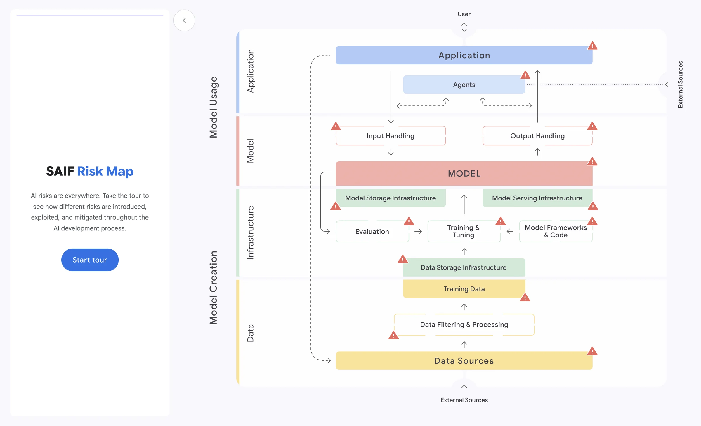
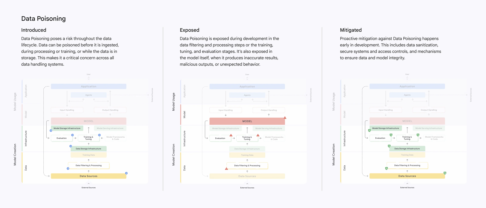
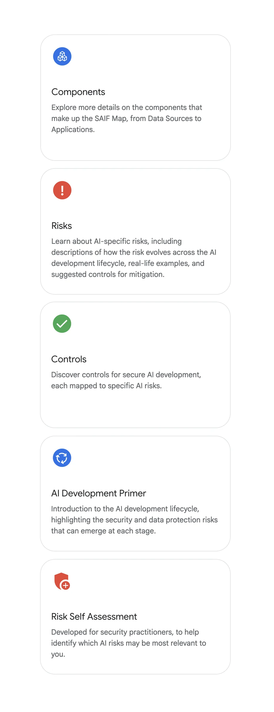
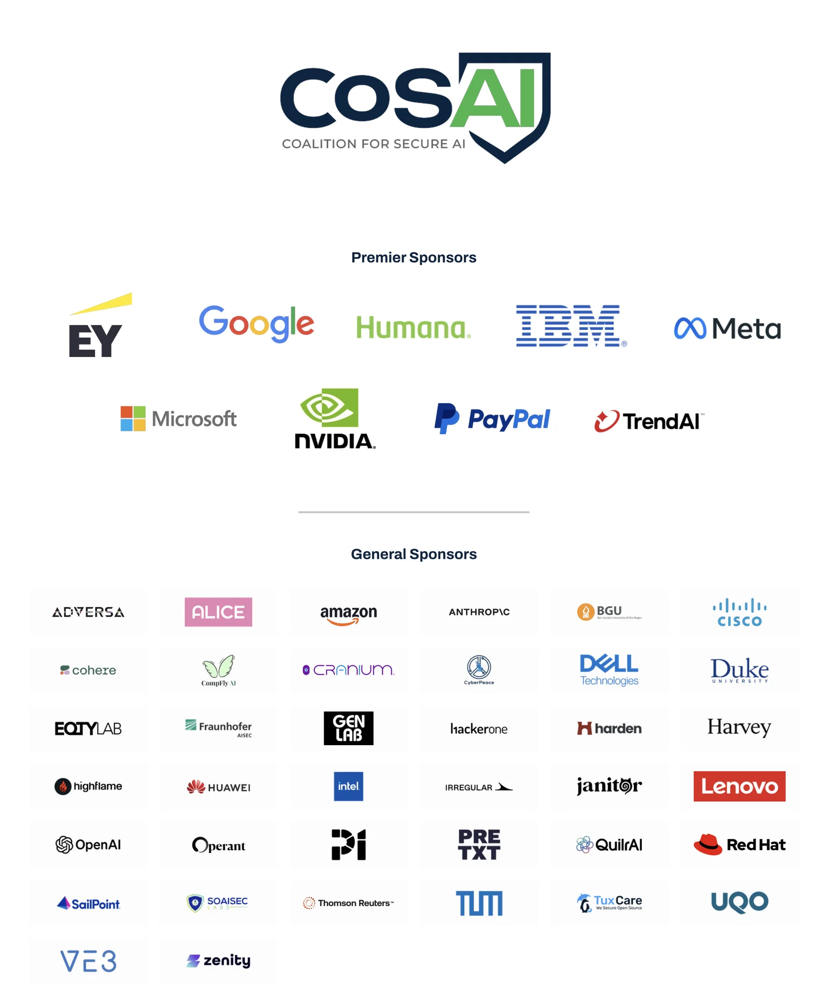

Systems & Information Design
Secure AI Framework Risk Map
How AI gets attacked and defended, turned into one visual map and accepted as an industry reference





About
The map is the centerpiece of Google’s Secure AI Framework (SAIF). For every risk, from data poisoning to prompt injection, it shows where the risk gets in, where it shows up, and where it can be stopped.
Google’s product areas and the organizations it works with across the industry needed a shared mental model and inventory of the risks to AI systems and the controls for addressing them. That expertise existed across the organization, but it wasn’t yet captured in a single, shared view. I directed the design of a visual map to show how AI systems get attacked and defended.
The design team went through multiple iterations to achieve technical accuracy with Google’s security engineering teams. Working through the map together helped the engineering teams validate not just individual details, but how the entire system fit together—confirming connections, exposing vulnerabilities, and identifying where controls and remediations belonged.
- Role
- Design direction, stakeholder validation
- Scope
- Four layers, 15 risks, 24 controls
- Used by
- Google product teams; Privacy, Safety & Security; Coalition for Secure AI (CoSAI)
- See it
- saif.google · CoSAI
Donated the risk map to the Coalition for Secure AI, where it is maintained as a shared reference across the industry.
More work
- Currently viewingSecure AI Framework Risk MapSystems & Information Design
 Security Analysis and ReportingEditorial & Content Design
Security Analysis and ReportingEditorial & Content Design Safer with Google SummitBrand Strategy · Event Design
Safer with Google SummitBrand Strategy · Event Design Brand FilmsBrand Film · Creative Direction
Brand FilmsBrand Film · Creative Direction
Tell me about your system.
Let’s talk